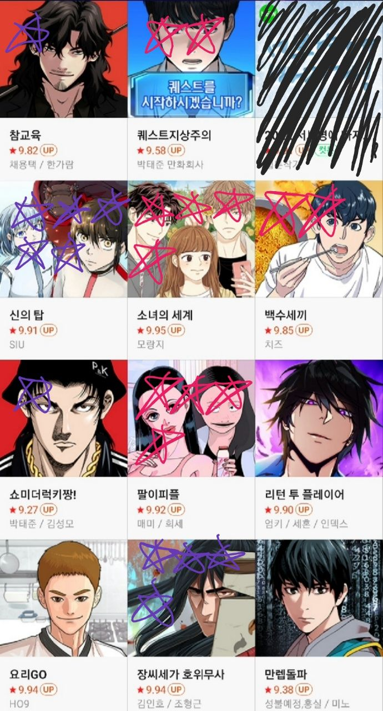

방구석게임중독님
방구석게임중독님 플랫폼 - 네이버
요일 - 월요일 (1)

별점기준
빨간색 ☆☆☆☆☆ - 보고있고 강추
빨간색 ☆☆☆☆ - 보고있고 재밌음
빨간색 ☆☆☆ - 보고있고 그냥저냥
빨간색 ☆☆ - 보고있고 재미없음
빨간색 ☆ - 보고있고 왜 보는건지 도대체 모르겠음
보라색 ☆☆☆☆☆ - 하차했지만 강추
보라색 ☆☆☆☆ - 하차했지만 재밌었음
보라색 ☆☆☆ - 하차했고 그냥저냥
보라색 ☆☆ - 하차했고 재미없었음
보라색 ☆ - 하차했고 왜 봤던건지 도대체 모르겠음
표시하지 않은 웹툰들은 1화 정도는 봤으나 점수조차 매기지 못할 정도로 취향이 아니라 탈주했기 때문임. 소설 원작, 로맨스 등이 속한다.
참교육(보라색☆) : 네이버 인기순위를 석권한 학교일진물 중 하나. 그 분야 보는 사람에게는 재미있겠으나 이 장르는 내 취향이 아님. 그림을 잘 그리심.
퀘스트지상주의(빨간색☆☆) : 네이버 인기순위를 석권한 학교일진물 중 하나. 박태준 만화회사다... 이쪽 회사 작품은 거의 보지 않는다. 이곳과 비슷한 아카데미를 알기 때문에 여기가 어떤 기조를 가지고 어떤 피드백을 내어서 작가들을 배출하는지 감이 오는데, 그 기조가 내 취향이 아닌 듯. 학교일진물 장르라 나한테는 재미없는데 중간중간 개그 때문에 그냥저냥 보는 중. 글 그림 작가분들 실력이 준수한 듯, 그 분야 보는 사람에게는 무난하게 재미있겠다. 곧 하차할 것 같음.
신의탑(보라색☆☆☆☆☆) : 6개월 전 하차. 설정과 내용을 전부 기억하기에는 너무 방대하고 길었기 때문이다. 한때 네이버를 풍미하게 했던 전설의 작품. 아직 보지 못한 사람이 있다면 반드시 도전해보길. 설정부터 전개까지 아주 흥미진진하다.
소녀의세계(빨간색☆☆☆☆) : 초반은 재밌었는데 후반부터는 만화의 맛이 달라진다. 초반부는 항시 9.99를 유지했다가 후반부부터 별점의 오르락내리락이 그것을 증명한다. 그렇지만 항상 같은 전개를 할 수 없을테니 작가의 선택에도 당위성이 있다. 하차했다가 심심해서 중간부분을 건너뛰고 보는 중이다. 답답한 스토리가 꽤 있어서, 댓글 분위기가 험악하면 그 회차는 보지 않는다. 오늘도 건너뛰었다. 남성보다는 여성 독자들의 취향에 맞을 듯.
백수세끼(빨간색☆☆) : 곧 하차할 것 같음. 그림 준수.
쇼미더럭키짱(보라색☆) : 1주일 전까지만 해도 항상 챙겨봤었는데 하차했다. 김성모 작품은 많이 읽었는데, 이번에는 일일연재라 그런지 스토리가 진행되지 않을 때는 아예 안되는 점이 답답해서 하차. 차라리 럭키짱을 다시 보지, 쇼미더럭키짱은 별로 추천하지 않는다. 그나마 개그가 재밌었는데 초반부 개그는 아주 흥미로웠지만 그 후로는 그것조차 반복된다. 그래도 30대 이상 남성, 특히 김성모 줄기를 따라온 독자들에게는 취향에 맞을 것.
팔이피플(빨간색☆☆☆☆) : 글 그림 작가가 독자 기분 나쁘게 하는 법을 잘 안다. 마스크걸, 위대한 방옥순까지 전작도 추천. 하나같이 독자를 기분 나쁘게 만든다. 그게 작가들의 의도라는 점이 포인트다.
장씨세가호위무사(보라색☆☆☆☆) : 좋아하는 그림 작가. 남지은-김인호 부부작가의 웹툰을 많이 본 편이라 정 때문에 몇 화 봤지만 무언가 취향이 아니었다. 무협 장르도 재밌게 보는데 이건 왜일까. 장씨세가호위무사라는 웹소설 컨텐츠 자체가 평점이 좋기 때문에 무협을 좋아한다면 재밌게 볼 수 있을 듯. 로맨스 장르는 보지 않는 편이지만 이 부부작가의 전작 '사랑일까' 추천. '패밀리사이즈'는 일상물인데, 연재중이었을 땐 가볍게 보기 좋지만 역시 일상물이라서 스토리물보단 정주행하라고 추천하기 힘들다.
이번 글의 개추 만화 : 신의탑, 팔이피플
후원댓글 7개
댓글 7개 ▼